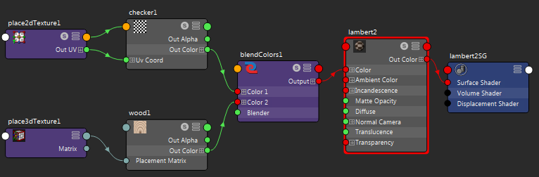

对于“融合颜色”工具的说明，请参见融合颜色。
请尝试以下操作以了解该工具如何工作。
使用“融合颜色”(Blend Color)工具融合颜色
- 创建以下内容—“棋盘格”(Checker)（“2D 纹理”(2D textures)）、“木材”(Wood)（“3D 纹理”(3D textures)）、“融合颜色”(Blend Colors)（“工具”(Utilities)）和“Lambert”材质。
有关在 Hypershade 中创建材质的详细信息，请参见在 Hypershade 中创建和连接节点。
- 拖动以在“棋盘格”(Checker)节点和“融合颜色”(Blend Colors)节点之间创建连接线。将“棋盘格”(Checker)节点的“输出颜色”(Out Color)属性连接到“融合颜色”(Blend Colors)节点的“颜色 1”(Color 1)属性。
- 将“木材”(Wood)节点的“输出颜色” (Out Color)属性连接到“融合颜色”(Blend Colors)节点的“颜色 2”(Color 2)属性。
- 将“融合颜色”(Blend Colors)节点的“输出”(Output)属性连接到 Lambert “颜色”(Color)输入属性。
结果是在木材和棋盘格纹理之间的融合。在“融合颜色”(Blend Color)的“属性编辑器”(Attribute editor)中，将“融合器”(Blender)滑块调整为接近 1 时，会显示多数棋盘格纹理，将“融合器”(Blender)滑块调整接近 0 时，会显示多数木材纹理。
